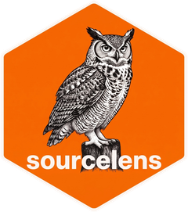

sourcelens
The latest research on any topic, in one catalogue.
Give it a topic. It searches PubMed, Europe PMC, arXiv and OpenAlex, downloads the open-access full texts, finds the code the papers link to, and keeps everything in one table, oldest first. Run it again later and it adds only what is new.
Install
pip install sourcelensor the Go binary (Linux x86-64; for another system use the address of its button):
curl -fLo sourcelens https://github.com/bhagesh-h/sourcelens/releases/latest/download/sourcelens_linux_amd64
chmod +x sourcelens && mv sourcelens ~/.local/bin/or with Go:
go install github.com/bhagesh-h/sourcelens/cmd/sourcelens@latestPython 3.10 or newer. The binaries are not signed: if macOS blocks
one downloaded in a browser, run xattr -d com.apple.quarantine sourcelens.
Use
# once: the literature services ask for a contact address
sourcelens config set contact_email you@example.org
# start a catalogue; the same command later adds what is new
sourcelens "CRISPR base editing"
# the last month, or references for Zotero and LaTeX
sourcelens query --topic "CRISPR base editing" --range 1m
sourcelens export --topic "CRISPR base editing" --format BIB --out crispr.bibCommas and OR separate alternatives, every word of an alternative
is required, and quotes keep a phrase: sourcelens '"base editing", "prime editing"'.
- --range 1m, --from 2024
- how far back to search (a new topic starts 12 months back)
- --types papers
- metadata only, no downloads
- --sources pubmed,arxiv
- only these sources
- --dry-run
- print the plan and run nothing
Each topic gets a folder under ~/sourcelens with
progress.csv (one row per paper, preprint, repository or website),
the full texts, and the exports.